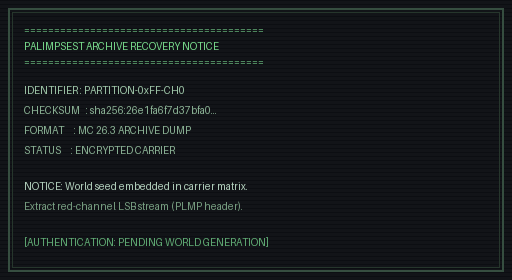

RECOVERY NOTICE: PARTITION 0xFF-CH0
An orphaned Minecraft world backup has been located and indexed under identifier Wren_Final_Singleplayer. System state appears partially overwritten.
To begin restoration in Minecraft 26.3:
- Extract the required world seed from the recovery carrier graphic below.
- Create a singleplayer world using the exact extracted seed.
- Load the archive mod. The system will activate upon matching the seed hash.
INTEGRITY VERIFICATION:
Target Archive: Wren_Final_Singleplayer [MC 26.3]
Status : Dormant until matching seed activation
Carrier Image : assets/recovery_notice.png
Stego Encoding: Red-channel LSB (Magic: PLMP)

"Recovered archive. Integrity: verified. The key is in the picture."
Download Carrier Image (PNG)Need Help Extracting?
Use Python with Pillow or any standard LSB steganography tool to inspect the red channel LSBs of the carrier image. For hints or if you've already found clues inside the world, consult the Hints & Keys section.